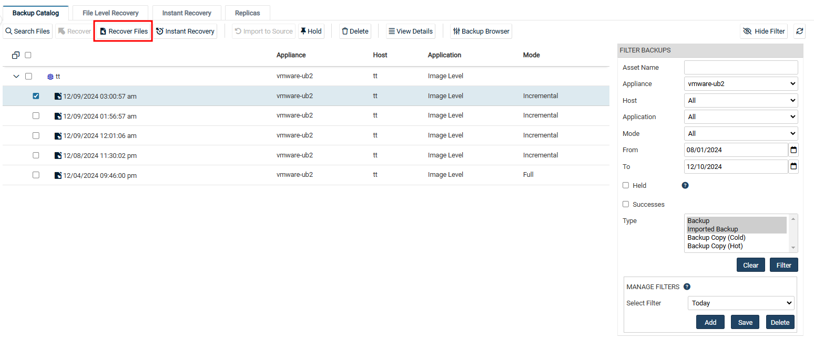
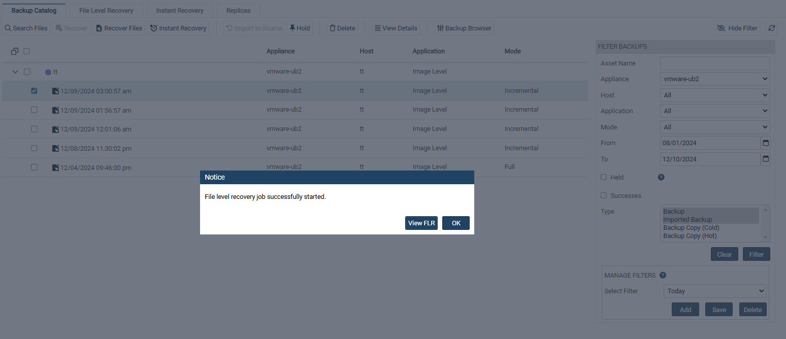
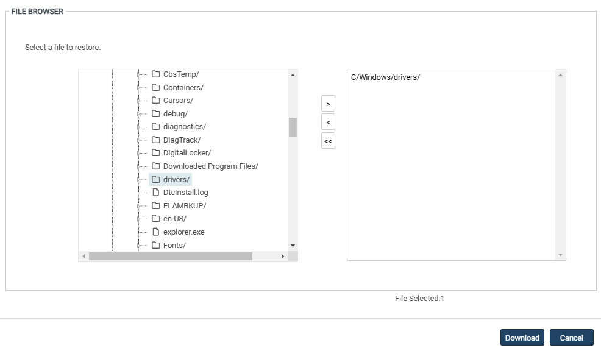
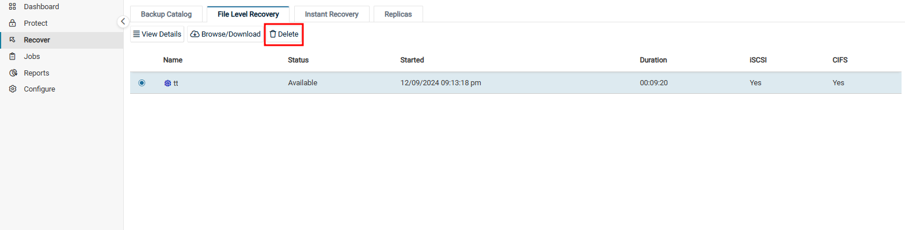

이미지 백업의 복구 절차#
Unitrends는 Windows 시스템의 이미지 백업을 복구하기 위한 다양한 방법을 제공합니다.
전체 복구를 하거나, 백업본에서 선택한 파일만 복구할 수 있습니다.
중요 시스템의 빠른 복구를 위해 백업 복제본(Replica)을 생성하거나 Instant Recovery(Windows 이미지백업) 기능을 사용할 수 있습니다.
그럼 Windows 이미지 백업을 활용한 다양한 복구 기능의 절차를 확인해보도록 하겠습니다.
1. 전체 복구 단계#
(1) 백업본 선택:
Backup Catalog 또는 Backup Browser에서 선택할 수 있습니다.
Backup Catalog:
백업 카탈로그에서는 백업본이 아래에 표시됩니다.
우측 FILTER BACKUPS에서 날짜 및 표시 형식을 지정할 수 있습니다.
표시되는 대상을 확장하면 해당 시스템의 백업본을 확인할 수 있습니다.

Backup Browser:
백업 브라우저는 고급 검색 및 필터 옵션을 제공합니다.
Unitrends 어플라이언스와 날짜 범위를 조정하여 백업을 검색합니다.
열 필드에 텍스트를 입력하여 디스플레이를 필터링합니다.
열 필드의 화살표를 클릭하여 열별로 정렬합니다.

(2) 전체 복구 선택:
Recover:
표시된 백업본 중에서 원하는 복구 시점을 선택한 후 위 Recover 버튼을 클릭합니다.
2. 개별 파일 복구 단계#
다음 절차를 사용하여 Windows 이미지 백업에서 파일로 복구합니다.
(1) 백업본 선택:
Recover → Backup Catalog 탭을 클릭합니다.
오른쪽에 있는 FILTER BACKUPS를 사용하여 디스플레이에 표시되는 백업을 커스텀합니다.
Windows 시스템을 확장하고 파일 복구할 이미지 백업을 선택합니다. 
(2) 복구 개체 생성:
※ 참고:
한 Windows 시스템에 대해 여러 복구 개체가 생성될 수 없습니다.
따라서 기존 복구 개체가 존재하는 경우, 새 복구 개체를 만들기 전에 기존 복구 개체를 제거해야 합니다.
Recovery Files 버튼을 클릭하고, Confirm 버튼을 클릭하여 복구 개체를 생성합니다.
(3) 복구 개체 확인:
View FLR 버튼을 클릭하여 생성된 복구 개체를 확인합니다. 
(4) 파일 복구 실행:
Recover → File Level Recovery 탭을 통해 다양한 파일 복구를 진행할 수 있습니다.
복구 개체는 Windows 시스템 이름, 복구 개체의 상태, 복구 개체가 생성된 날짜 및 시간과 개체 유지시간, iSCSI 또는 CIFS를 통해 액세스할 수 있는지의 여부가 함께 표시됩니다.
.zip 파일로 다운로드:
복구 개체를 선택하고 Browse/Downloads버튼을 클릭합니다.
파일 및 폴더를 선택하고 Downloads 버튼을 클릭하여 .zip 파일로 다운로드합니다.
.zip 파일은 브라우저의 기본 위치로 다운로드됩니다.
※ 참고:
복구 중에 볼륨에 문자가 할당되면 해당 문자가 원본 디스크의 문자와 일치하지 않을 수 있습니다.
다운로드 시간은 파일 크기, 대역폭, 다운로드 속도 등 다양한 요인에 따라 영향을 받습니다.

CIFS 공유로 마운트:
복구 개체를 선택하고 Show Details버튼을 클릭합니다.
File Level Recovery Details 창에 표시되는 CIFS Path를 기록해두세요. 대상 시스템에서 CIFS를 마운트하려면 이 경로가 필요합니다.
파일 브라우저에 CIFS 경로를 입력합니다.
※ 참고:
복구 중에 볼륨에 문자가 할당되면 해당 문자가 원본 디스크의 문자와 일치하지 않을 수 있습니다.
Windows 파일 탐색기에는 보호/시스템 파일을 숨기는 설정이 포함되어 있습니다. 모든 파일에 액세스하려면 이 설정을 끄십시오.
복구할 파일 및 폴더를 선택하여 로컬 컴퓨터의 다른 위치로 공유합니다.
iSCSI LUN으로 복구:
복구 대상 시스템에 로그인합니다.
제어판의 관리 도구에서 iSCSI 초기자를 시작합니다.
Tartet에 Unitrends 어플라이언스 IP를 입력하고 Quick Connect..를 클릭합니다.
검색된 Tartet 필드에는 iSCSI LUN 대상 목록이 채워지며, 목록에서 iSCSI 대상을 선택합니다.
Disk Manager 또는 diskpart를 사용하여 마운트된 iSCSI 디스크가 온라인인지 확인합니다. 그렇지 않은 경우 드라이브를 온라인으로 전환합니다.
iSCSI Initiator로 돌아갑니다. Volumes and Devices 탭에서Auto Configure를iSCSI 대상에서 로컬 머신으로 드라이브를 매핑합니다(또는 원하는 경우 수동으로 매핑).
※ 참고:
복구 중에 볼륨에 문자가 할당되면 해당 문자가 원본 디스크의 문자와 일치하지 않을 수 있습니다. * 매핑된 드라이브 아래에 있는 파일에 액세스하여 로컬 컴퓨터의 다른 위치로 이동합니다. ※ 참고:
Windows 파일 탐색기에는 보호/시스템 파일을 숨기는 설정이 포함되어 있습니다. 모든 파일에 액세스하려면 이 설정을 끄십시오.
3. 복구 개체 제거#
최적의 성능을 보장하려면 Unitrends 어플라이언스에서 복구 개체를 제거하세요.
※ 경고!:
CIFS 또는 iSCSI LUN을 마운트한 경우 복구 개체를 제거하기 전에 Windows 대상 시스템에서 마운트를 해제해야 합니다.
Windows 대상 시스템이 아직 연결된 상태에서 복구 개체를 제거하면 원치 않는 결과와 오류가 발생합니다.
(1) 제거할 복구 개체 선택:
Recover → File Level Recovery 탭을 클릭합니다.
제거할 복구 개체를 선택합니다.
(2) 복구 개체 제거:
Delete 버튼을 클릭하여 제거를 진행합니다.
개체가 제거되고 더 이상 파일 복구 개체 탭에 표시되지 않습니다. 